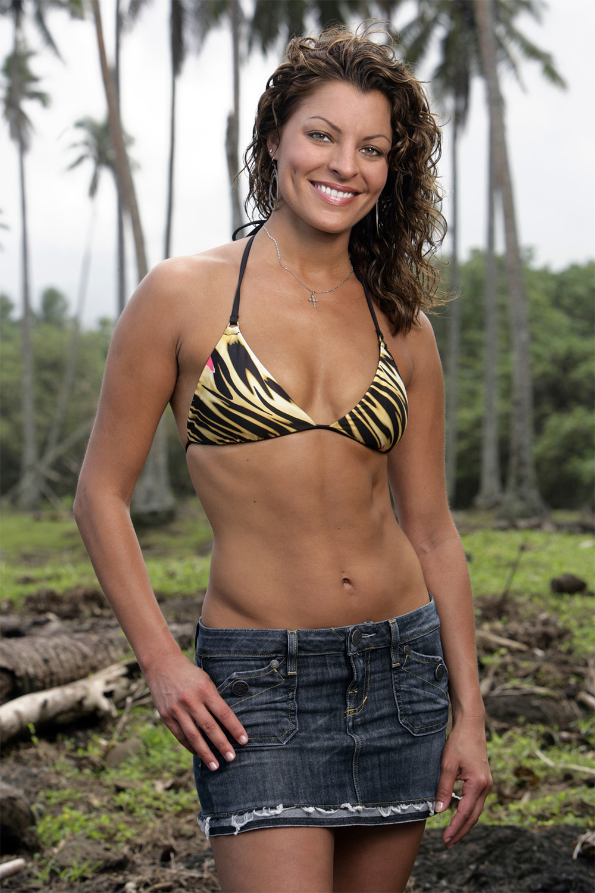
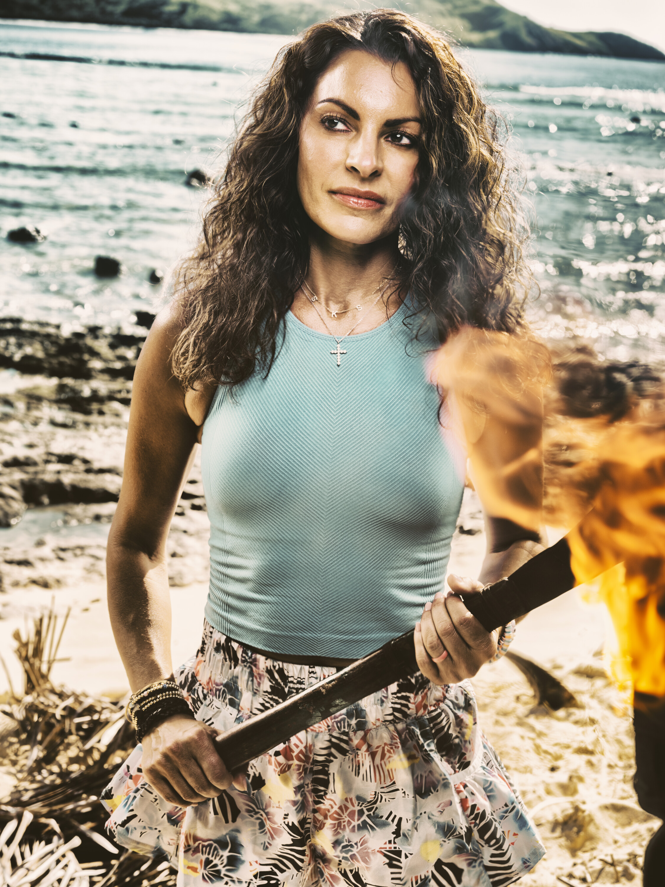

Stephenie LaGrossa Kendrick


Episode 1
Stephenie immediately reconnected with Colby from Heroes vs. Villains, forming the anchor of the Vatu majority. She was present when Genevieve found the Boomerang Idol and participated in the decision to send it to Ozzy. She is playing a balanced game within her alliance but received limited confessional content in the premiere.
Episode 2
Stephenie continued to play a steady game within the Vatu majority. The core four (Q, Colby, Genevieve, Stephenie) recruited Rizo, giving the alliance a commanding 5-2 advantage over Aubry and Angelina. As one of only two original majority members who can still vote (with Genevieve), Stephenie carries extra weight in the alliance. Vatu won immunity.
Alliances
Anchor of the majority alliance with Colby. One of only two majority members who still has her vote (with Genevieve). Critical to keeping the alliance together. Has knowledge of the Boomerang Idol's existence and who has it. Strong and stable heading into a swap.
About
Stephenie LaGrossa Kendrick is a Survivor legend and the only castaway to ever be on a tribe completely by herself, a distinction from Palau (Season 10). She was the runner-up on Guatemala (Season 11) but was voted out early on Heroes vs. Villains (Season 20). She had previously said that was her last time playing, but she's back for a fourth attempt. Her downfall has traditionally been the social side of the game, but her fighter mentality could serve as a useful shield for alliance partners.